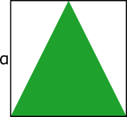
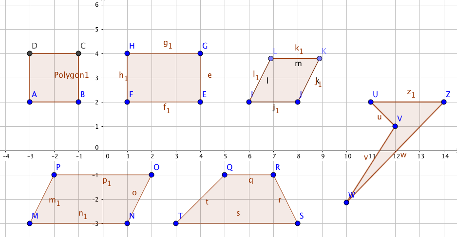
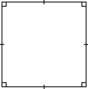
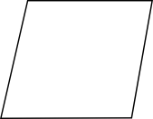
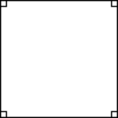
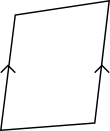
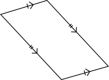
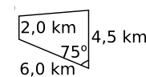
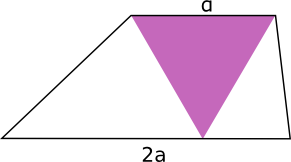

9. Fyrhörningen
Hittills har vi behandlat vinklar, tittat på likformighet, undersökt trianglar, lärt oss om Pythagoras sats och sett på olika trigonometriska egenskaper så som sinus, cosinus och tangens. Till nästa tittar vi på fyrhörningar och cirkeln.
En fyrhörning är vilken geometrisk figur som har fyra hörn, och fyra sidor. Rektangeln och kvadraten är bekanta för dig från grundskolan. Här bekantar vi oss med parallellogramen och trapetsen.
Parallellogram
En parallellogram är en fyrhörning vars motstående sidor är parallella. Arean för en parallellogram är \( A=ah=ab\sin\alpha \).

Romben, rektangeln och kvadraten är alla specialfall av parallellogrammen.
Trapets
En trapets skiljer sig från parallellogrammen genom att den endast har ett par av motstående sidor som är parallella. Arean för trapetsen är \( A=\dfrac{1}{2}(a+b)h \).

Exempel 1 Bestäm arean för rektangeln och parallellogrammen i figuren. Hur många procent utgör rektangelns area av parallellogrammens area?

Lösning
\( \begin{array}{rl} \textrm{Rektangelns area:} & A_r= bl =2\cdot 3 = 3 \\ \textrm{Parallellogrammens area:} & A_p=ah =(1+3)\cdot 2 = 8 \\ \textrm{Procenten:} & \dfrac{A_r}{A_p} = \dfrac{6}{8}=\dfrac{3}{4} = 75 \% \\ \end{array} \)
Exempel 2 En likbent triangel inskrivs i en kvadrat, se figuren. Hur många procent utgör triangelns area av kvadratens?

Lösning
\( \begin{array}{rl} \textrm{Arean för triangeln:} & A_t=\dfrac{1}{2}bh =\dfrac{1}{2}a\cdot a\\ \\ \textrm{Arean för kvadraten:} & A_k=s^2 =a^2 \\ \\ \textrm{Procenten:} & \dfrac{A_t}{A_k}=\dfrac{\dfrac{1}{2}a^2}{a^2} = \dfrac{1}{2} = 50 \% \\ \end{array} \)
Uppgifter
- Kombinera så att det är rätt. Välj bland följande påståenden:
FyrhörningKvadratParallellogramRektangelRombTrapets eller (parallell)Trapets
Benämning Beskrivning Har fyra hörn. Har fyra hörn och ett par motstående sidor är parallella. Har fyra hörn, motstående sidor är parallella och lika långa. Har fyra hörn och alla sidor är lika långa. Har fyra hörn, motstående sidor är lika långa och alla vinklarna är räta. Har fyra hörn, alla sidor är lika långa och alla vinklar är räta. Benämning Beskrivning Fyrhörning Har fyra hörn. Trapets eller parallelltrapets Har fyra hörn och ett par motstående sidor är parallella. Parallellogram Har fyra hörn, motstående sidor är parallella och lika långa. Romb Har fyra hörn och alla sidor är lika långa. Rektangel Har fyra hörn, motstående sidor är lika långa och alla vinklarna är räta. Kvadrat Har fyra hörn, alla sidor är lika långa och alla vinklar är räta. Konstruera på GeoGebra
- en kvadrat,
- en rektangel,
- en romb,
- en parallellogram,
- en trapets och
- en fyrhörning.
Markera ut dina fyrhörningar med Polygon verktyget.
För att få längder som är av bestämd längd lönar det att använda sig av Sträcka med bestämd längd verktyget.
Se till för romben att alla sidor verkligen är lika långa!
Något i stil med

Välj rätt benämning för fyrhörningarna i uppgiften.
Jämför med uppgiften nedan.
Påstående Fyrhörning Trapets Parallellogram Romb Rektangel Kvadrat 

 
    Påstående Fyrhörning Trapets Parallellogram Romb Rektangel Kvadrat - Välj rätt kategorier för fyrhörningarna i uppgiften.
Påstående Fyrhörning Trapets Parallellogram Romb Rektangel Kvadrat Påstående Fyrhörning Trapets Parallellogram Romb Rektangel Kvadrat - Bestäm areorna för figurerna nedan. Svara med en tiondels noggrannhet förutom på den sista där du får svara exakt.

Vi har en trapets.
Höjden är, \( h=\sqrt{3^2-1^2} = \sqrt{8} \).
Arean är \( A=\dfrac{1}{2}(a+b)h = \dfrac{1}{2}(4+6)\sqrt{8} = 10\sqrt{2} \approx 14,142 = 14,1 \) cm2.

Vi har en parallellogram.
\( A=ab\sin\alpha = 2\cdot4\sin110^{\circ}=7,518 = 7,5 \) m2.

Vi har en trapets.
Höjden är \( h=6\sin75^{\circ} \).
Arean är \( A=\dfrac{1}{2}(a+b)h=\dfrac{1}{2}(4,5+2,0)\cdot 6 \sin75^{\circ} = 18,836=18,8 \) km2.

Vi har en romb.
\( A=a^2\sin\alpha = 2^2\sin 60^{\circ}=4\cdot \dfrac{\sqrt{3}}{2} = 2\sqrt{3} \) a.e.
Bestäm storleken av åkern.

Tänk efter och dela in i mindre delar. Vill du arbeta med mindre tal så gäller att 1 ha = 100 m x 100 m.
Arean för den första åkern är \( A=\dfrac{1}{2}(a+b)h = \dfrac{1}{2}(2+3)\cdot 1,5 \sin 60^{\circ} = 3,247\ldots \) ha.
Arean för den andra åkern är \( A=ab\sin\alpha = 1,5\cdot 3\sin 30^{\circ} = 2,25 \) ha.
Totala är \( 3,247\ldots + 2,25 = 5,4976 = 5,5 \) ha.
- En parallellogram har arean 15 m2. Förhållandet mellan sidorna är 1:3 och den större vinkeln mellan sidorna är 120o. Bestäm längden av sidorna.
Vi kallar sidorna för \( x \) och \( 3x \). Vi får att \( 15=x\cdot 3x \sin120^{\circ} \), som ger att \( x=2,403 \).
Den kortare är 2,4 m.
Den längre är 7,2 m.
- En romb har arean 10 a.e. Bestäm längden av sidorna då vi vet att dem mindre vinkeln mellan sidorna är 30o.
Vi betecknar sidorna med \( a \). Vi får att \( 10=a^2\sin30^{\circ} \) som ger oss att \( a=2\sqrt{5} \).
- I en trapets inskrivs en liksidig triangel enligt figuren. Bestäm förhållandet mellan figurernas areor.

Vi har \( \dfrac{A_{\text{triangel}}}{A_{\text{trapets}}} = \dfrac{\dfrac{1}{2}bh}{\dfrac{1}{2}(a+b)h} \)
Höjden för trapetsen och triangeln är samma, \( h \). Vi behöver inte bestämma den eftersom vi kommer att förkorta bort den.
Alltså \( = \dfrac{b}{a+b} = \dfrac{a}{2a+a} = \dfrac{a}{3a} =\dfrac{1}{3} \).
Förhållandet mellan areorna: triangeln : trapets = 1:3.
- En kvadrat skrivs in i en annan kvadrat så att den mindre kvadratens hörn finns mitt på sidan av den större kvadratens sida. Hur många procent utgör den mindre kvadratens area utav den större kvadratens area?
Då vi betecknar den stora kvadratens sida med \( 2a \) är halva längden \( a \) och då är lilla kvadratens sida \( a\sqrt{2} \) (Kommer via Pyhtagoras och Typtriangel 1).
Förhållandet mellan areorna är \( \dfrac{A_{\text{liten kvadrat}}}{A_{\text{stor kvadrat}}} = \dfrac{(a\sqrt{2})^2}{(2a)^2} =\dfrac{2a^2}{4a^2} = \dfrac{1}{2} \). Alltså 50 %.